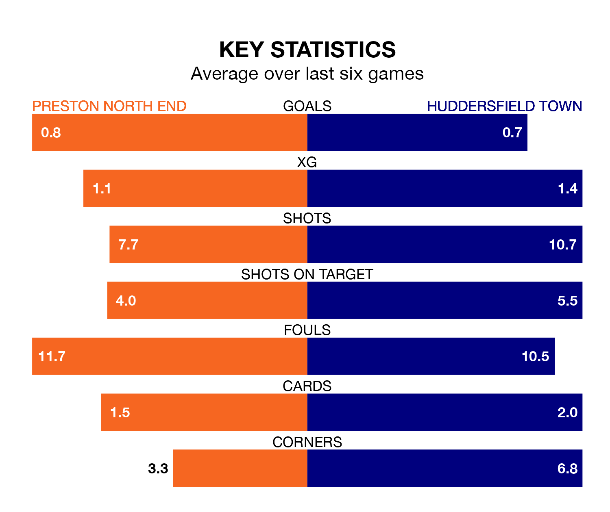

Struggling Huddersfield Town face Preston North End away at Deepdale on Tuesday looking to build on a win in their last league outing.
After securing all three points with a 1-0 victory over Millwall on Saturday, the Terriers sit 21st in EFL Championship.
They travel to play a Preston side 10th in the standings, who were held in their last match, 0-0 against Watford.
In the last 10 years, Preston and Huddersfield have played each other on 15 occasions. Preston won nine of them, Huddersfield four, and they drew twice.
On average, the Lilywhites scored 1.9 goals and the Terriers 1.1 in those matches.
Their last meeting was on December 12, when Preston won 3-1 away.
Preston are in mixed form in EFL Championship, with two wins and two draws from their last six games.
With a win and two draws over that period, Huddersfield's form is worse – they have taken five points from 18, compared to North End's eight.
With 45 goals in 41 games so far this season, Town are scoring at below the league average rate with 1.1 goals per game. And they are conceding more than average, letting in 65 goals at a rate of 1.6 per game.
The Lilywhites, meanwhile, are average scorers, with 1.3 goals per game. They have conceded 1.4 goals per game.
Updated: 11:20 (UTC), 09/04/24